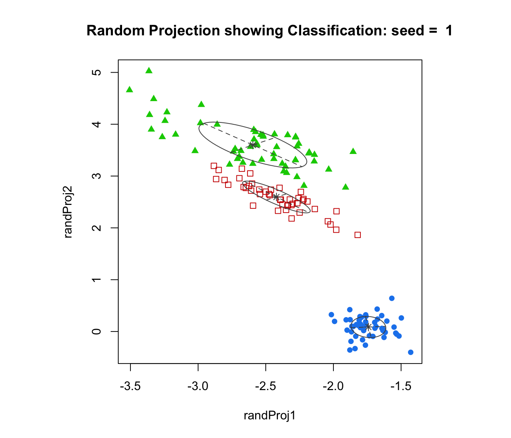
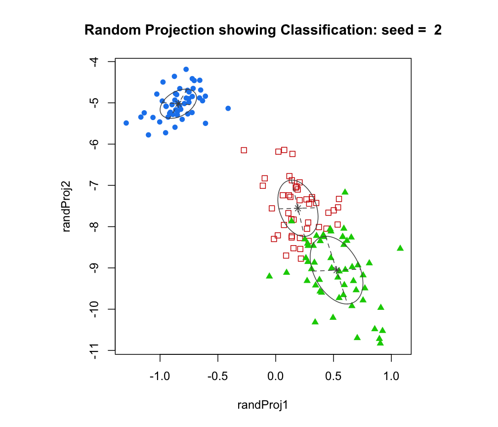
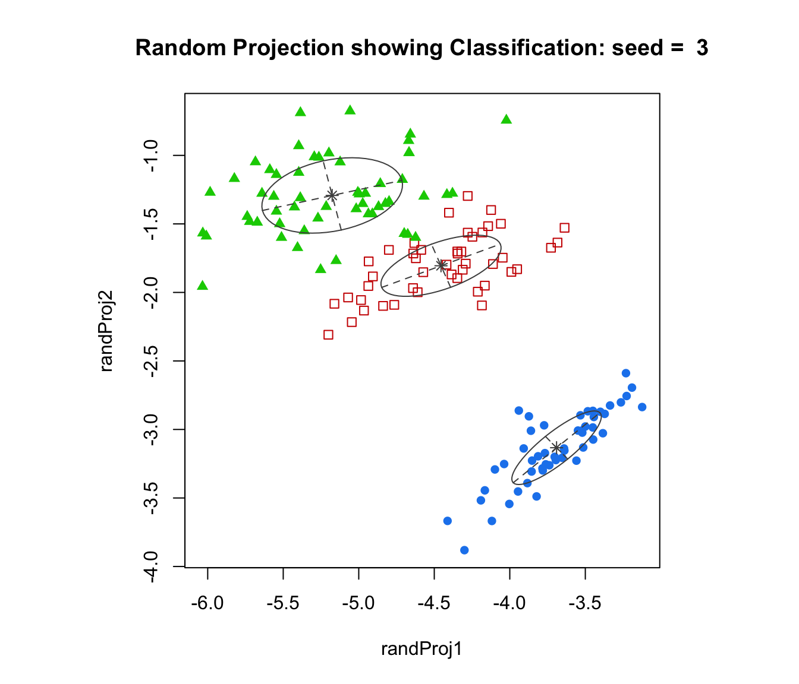
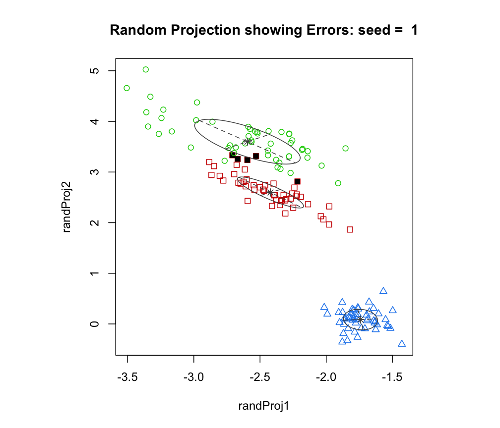
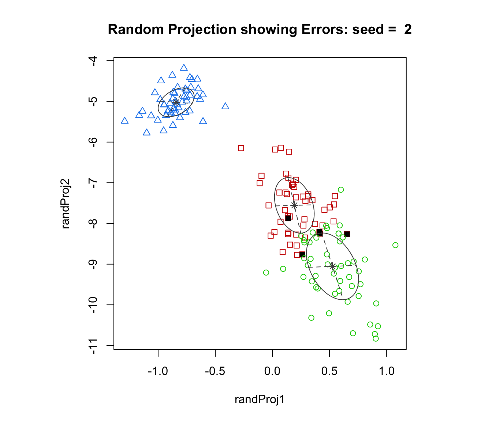
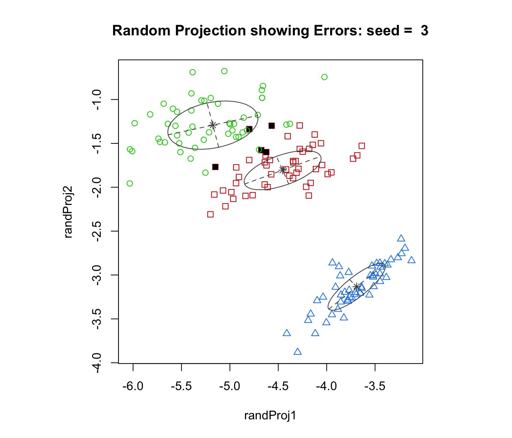
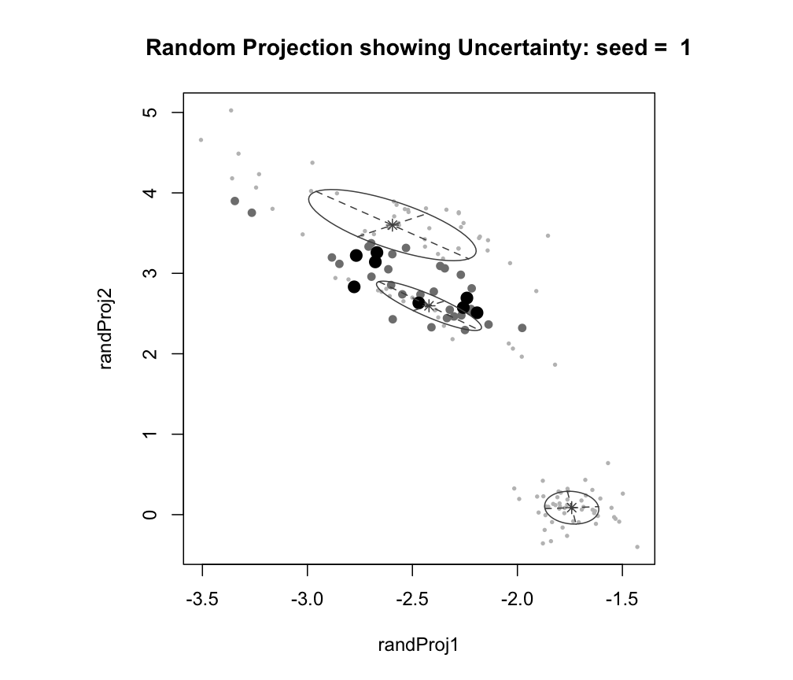
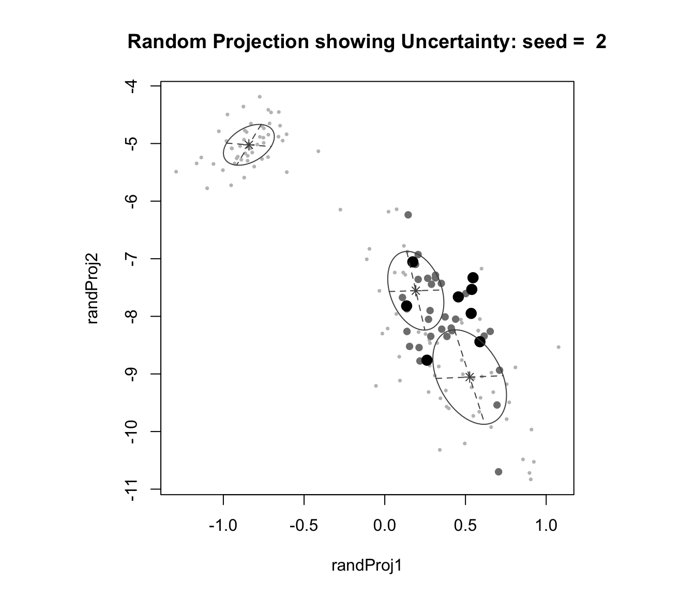
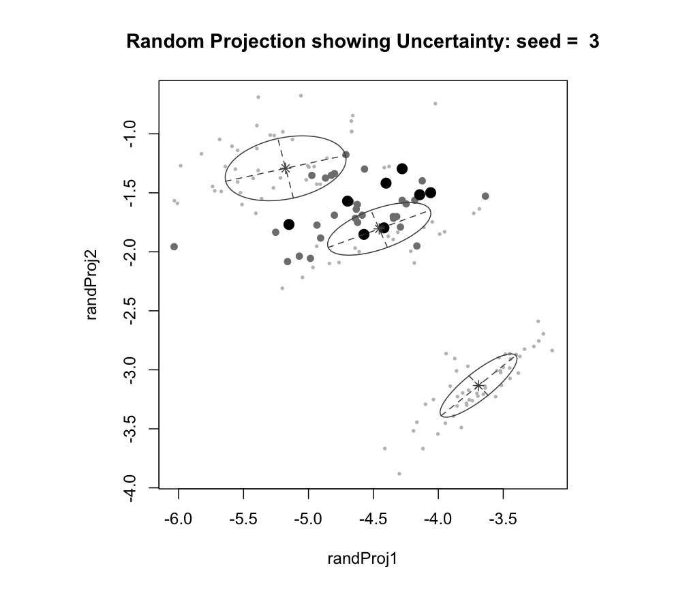

Random projections of multidimensional data modeled by an MVN mixture
randProj.RdPlots random projections given multidimensional data and parameters of an MVN mixture model for the data.
Usage
randProj(data, seeds = NULL, parameters = NULL, z = NULL,
classification = NULL, truth = NULL, uncertainty = NULL,
what = c("classification", "error", "uncertainty"),
quantiles = c(0.75, 0.95),
addEllipses = TRUE, fillEllipses = mclust.options("fillEllipses"),
symbols = NULL, colors = NULL, scale = FALSE,
xlim = NULL, ylim = NULL, xlab = NULL, ylab = NULL,
cex = 1, PCH = ".", main = FALSE, ...)Arguments
- data
A numeric matrix or data frame of observations. Categorical variables are not allowed. If a matrix or data frame, rows correspond to observations and columns correspond to variables.
- seeds
An integer value or a vector of integer values to be used as seed for random number generation. If multiple values are provided, then each seed should produce a different projection. By default, a single seed is drawn randomnly, so each call of
randProj()produces different projections.- parameters
A named list giving the parameters of an MCLUST model, used to produce superimposing ellipses on the plot. The relevant components are as follows:
meanThe mean for each component. If there is more than one component, this is a matrix whose kth column is the mean of the kth component of the mixture model.
varianceA list of variance parameters for the model. The components of this list depend on the model specification. See the help file for
mclustVariancefor details.
- z
A matrix in which the
[i,k]th entry gives the probability of observation i belonging to the kth class. Used to computeclassificationanduncertaintyif those arguments aren't available.- classification
A numeric or character vector representing a classification of observations (rows) of
data. If present argumentzwill be ignored.- truth
A numeric or character vector giving a known classification of each data point. If
classificationorzis also present, this is used for displaying classification errors.- uncertainty
A numeric vector of values in (0,1) giving the uncertainty of each data point. If present argument
zwill be ignored.- what
Choose from one of the following three options:
"classification"(default),"error","uncertainty".- quantiles
A vector of length 2 giving quantiles used in plotting uncertainty. The smallest symbols correspond to the smallest quantile (lowest uncertainty), medium-sized (open) symbols to points falling between the given quantiles, and large (filled) symbols to those in the largest quantile (highest uncertainty). The default is (0.75,0.95).
- addEllipses
A logical indicating whether or not to add ellipses with axes corresponding to the within-cluster covariances in case of
"classification"or"uncertainty"plots.- fillEllipses
A logical specifying whether or not to fill ellipses with transparent colors when
addEllipses = TRUE.- symbols
Either an integer or character vector assigning a plotting symbol to each unique class in
classification. Elements incolorscorrespond to classes in order of appearance in the sequence of observations (the order used by the functionunique). The default is given bymclust.options("classPlotSymbols").- colors
Either an integer or character vector assigning a color to each unique class in
classification. Elements incolorscorrespond to classes in order of appearance in the sequence of observations (the order used by the functionunique). The default is given bymclust.options("classPlotColors").- scale
A logical variable indicating whether or not the two chosen dimensions should be plotted on the same scale, and thus preserve the shape of the distribution. Default:
scale=FALSE- xlim, ylim
Optional arguments specifying bounds for the ordinate, abscissa of the plot. This may be useful for when comparing plots.
- xlab, ylab
Optional arguments specifying the labels for, respectively, the horizontal and vertical axis.
- cex
A numerical value specifying the size of the plotting symbols. The default value is 1.
- PCH
An argument specifying the symbol to be used when a classificatiion has not been specified for the data. The default value is a small dot ".".
- main
A logical variable or
NULLindicating whether or not to add a title to the plot identifying the dimensions used.- ...
Other graphics parameters.
Value
A plot showing a random two-dimensional projection of the data, together with the location of the mixture components, classification, uncertainty, and/or classification errors.
The function also returns an invisible list with components basis, the randomnly generated basis of the projection subspace, data, a matrix of projected data, and mu and sigma the component parameters transformed to the projection subspace.
Examples
# \donttest{
est <- meVVV(iris[,-5], unmap(iris[,5]))
par(pty = "s", mfrow = c(1,1))
randProj(iris[,-5], seeds=1:3, parameters = est$parameters, z = est$z,
what = "classification", main = TRUE)



randProj(iris[,-5], seeds=1:3, parameters = est$parameters, z = est$z,
truth = iris[,5], what = "error", main = TRUE)



randProj(iris[,-5], seeds=1:3, parameters = est$parameters, z = est$z,
what = "uncertainty", main = TRUE)



# }